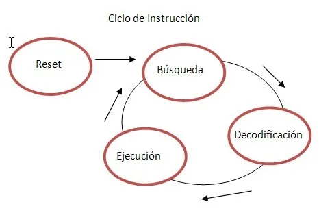

2.1 Organización del procesador
La Unidad de Procesamiento (CPU) controla el funcionamiento del computador y lleva a cabo sus funciones de procesamiento de datos. Frecuentemente se le llama procesador. Un procesador, incluye tanto registros visibles por el usuario como registros de control/estado. Los registros visibles por el usuario pueden ser de uso general o tener una utilidad especial, mientras que los registros de control y estado se usan para controlar el funcionamiento del procesador, un claro ejemplo es el contador de programa. Lleva a cabo una gran variedad de cálculos, comparaciones numéricas y transferencias de datos como respuesta a las peticiones de los programas que están siendo ejecutados en memoria.
2.2 Estructura de registros
Los registros del CPU se emplean para controlar las instrucciones en ejecución, manejar direccionamiento de memoria y propiciar la capacidad aritmética. Los registros vienen de tres tipos: datos, direcciones e índice, que tienen lugar en casi todos los aspectos de la operación del CPU. El tamaño de un registro depende del CPU; los más simples tienen registros que aceptan 8 o 16 bits de datos y los más complejos tienen registros de 32, 48 o 64 bits.
2.2.1 Registros visibles para el usuario
 Un registro visible al usuario es aquél que puede ser referenciado por medio del lenguaje máquina que ejecuta la CPU. Prácticamente todos los diseños contemporáneos de CPUs están provistos de varios registros visibles al usuario, en oposición a disponer de un único acumulador. Podemos clasificarlos en:
Un registro visible al usuario es aquél que puede ser referenciado por medio del lenguaje máquina que ejecuta la CPU. Prácticamente todos los diseños contemporáneos de CPUs están provistos de varios registros visibles al usuario, en oposición a disponer de un único acumulador. Podemos clasificarlos en:
- Uso General
- Datos
- Direcciones
- Códigos de Condición
Los registros de uso general pueden ser asignados por el programador a diversas funciones. A veces, su uso dentro del repertorio de instrucciones es para contener el operando para cualquier código de operación. Esto proporciona una utilización de registros de auténtico uso general. Con frecuencia, sin embargo, existen restricciones. Por ejemplo, puede haber registros específicos para operaciones en coma flotante. En algunos casos, los registros de uso general pueden ser utilizados para funciones de direccionamiento. En otros casos, hay una separación clara o parcial entre registros de datos y registros de direcciones.
Los registros de datos pueden ser usados únicamente para contener datos y no se pueden emplear en el cálculo de una dirección de operando. Los registros de dirección pueden ser en sí registros de uso más o menos general, o pueden estar dedicados a un modo de direccionamiento particular. El caso más conocido es el puntero a pila. La cantidad de registros generales o especializados es una cuestión de diseño. No hay solución óptima, pero la tendencia parece ir hacia el uso de registros especializados.
Otro problema de diseño es el número de registros, de uso general o de datos más direcciones, que tienen que incluirse. A mayor cantidad de registros se requieren mayor cantidad de bits en el campo de operando. Parece óptimo entre 8 y 32 registros. Menos registros se traducen en más referencias a memoria; más registros no reducen notablemente las referencias a memoria. Por último, está la cuestión de la longitud de los registros. Los registros que han de contener direcciones han de ser lo suficientemente grandes como para albergar la dirección más grande. Los registros de datos deben ser capaces de contener valores de la mayoría de tipos de datos. Algunas máquinas permiten que los registros contiguos sean usados como uno para contener valores de doble longitud.
Una categoría final de registros, que es al menos parcialmente visible al usuario, contiene códigos de condición (también llamados indicadores o flags). Los códigos de condición son bits fijados por el hardware de la CPU como resultado de alguna operación. Por ejemplo, una operación aritmética puede producir un resultado positivo, negativo o nulo, o con desbordamiento. Además de almacenarse el propio resultado en un registro o en la memoria, se obtiene también un código de condición. Los bits de códigos de condición se reúnen en uno o más registros. Por lo general, forman parte de un registro de control. Comúnmente, las instrucciones de máquina permiten que estos bits sean leídos por referencia implícita, pero no pueden ser alterados por el programador.

2.2.2 Registros de control y de estados
Hay diversos registros de la CPU que se pueden emplear para controlar su funcionamiento. La mayoría de éstos, en la mayor parte de las máquinas, no son visibles al usuario. Algunos de ellos pueden ser visibles a instrucciones de máquina ejecutadas en un modo de control o de sistema operativo. Naturalmente, máquinas diferentes tendrán diferentes organizaciones de registros y usarán distinta terminología. Se enumera aquí una lista razonablemente completa de tipos de registros, con una breve descripción. Son esenciales cuatro registros para la ejecución de una instrucción: el contador de programa, el registro de dirección, el registro de instrucción y el registro de datos.
El contador de programa contiene una dirección de instrucción. Típicamente, la CPU actualiza el PC después de cada captación de instrucción de manera que siempre apunta a la siguiente instrucción a ejecutar. Una instrucción de bifurcación o salto también modificará el contenido de PC. La instrucción captada se carga en el registro de instrucción, donde son analizados el código de operación y los campos de operando. Se intercambian datos con la memoria por medio de registro de direcciones y el de datos. En un sistema con organización de bus, el de direcciones se conecta directamente al bus de direcciones, y el de datos directamente al bus de datos.
Los registros visibles al usuario, sucesivamente, intercambian datos con el de datos. Los cuatro registros que acaban de mencionar se usan para la transferencia de datos entre la CPU y la memoria. Dentro de la CPU, los datos tienen que ofrecerse a la ALU para su procesamiento. La ALU puede tener acceso directo al de datos y a los registros visibles al usuario. Como alternativa, puede haber registros intermedios adicionales en el límite de la ALU; estos registros sirven como registros de entrada y salida de la ALU e intercambian datos con el de datos y los registros visibles al usuario.
El registro de estado, también conocido como registro de bandera, palabra de estado del programa y registro de código de condición, se define como un conjunto de bits de bandera dentro de un procesador. Un registro es un circuito procesador y es muy parecido a una ubicación de memoria, lo que significa que los datos podrían escribirse y leerse. A diferencia de una ubicación de memoria, el registro de estado a menudo no tiene una dirección porque el microprocesador la usa internamente. En una unidad central de procesamiento (CPU) de 8 bits, se puede establecer un bit de registro de estado, igual al número 1, o borrar, igual al número 0, mediante una variedad de resultados de operación del procesador. El procesador a veces establece o borra los bits, pero otras veces, una instrucción de programa particular establece o borra los bits.
Los bits de registro de estado también se denominan banderas o bits de bandera, y el programador los utiliza para ciertos fines de programación. Cada bandera en un registro de estado tiene un propósito único. El indicador de acarreo se establece si una operación anterior hizo que el séptimo bit - o indicador negativo - se desbordara, o hiciera que el indicador de transporte se desbordara. Se establece durante los cambios de lógica, comparación y aritmética. El indicador de cero se establece si el resultado de la operación más reciente fue 0. Un indicador llamado "deshabilitar interrupción" funciona permitiendo o deshabilitando la operación de interrupciones, que son instrucciones que detienen temporalmente ciertas operaciones para que se puedan realizar otras operaciones.
Cuando se establece este indicador en particular, no se permite que funcionen las interrupciones, pero cuando está claro, se permiten las interrupciones. Otra bandera llamada bandera decimal permite al procesador seguir un modo binario más avanzado para realizar ecuaciones aritméticas impecables. Cuando se establece la bandera, utiliza este modo binario avanzado. Otro bit de registro es el bit de interrupción, que se establece cuando se ejecuta una instrucción de interrupción. Un bit de desbordamiento es similar a una bandera de transporte, pero se relaciona solo con la operación aritmética. Cuando el bit está claro, no se produce ningún desbordamiento, pero cuando se establece, se produce un desbordamiento, lo que significa que el número es negativo.

2.2.3 Ejemplos de registros de CPU reales
 x86:
x86:
EAX, EBX, ECX, EDX (Propósito General)
ESP (Puntero de Pila)
EIP (Contador de Programa)
EFLAGS (Registro de Estado)
ARM:
R0, R1, R2, R3 (Propósito General)
SP (Puntero de Pila)
PC (Contador de Programa)
CPSR (Registro de Estado)
2.3 El ciclo de instrucción

La mayor parte de los trabajos de la CPU se llevan a cabo bajo el control de la instrucción, de acuerdo a una secuencia impuesta por el programa en ejecución. Este proceso incluye la captura de la instrucción, su decodificación, la lectura de los operandos, la ejecución de la instrucción, y la escritura del resultado.
El ciclo de instrucción (que se muestra en la figura a continuación) es un proceso de varios pasos, que incluye: captura de la instrucción, decodificación de la instrucción, ejecución de la instrucción y almacenamiento del resultado.
2.3.1 Ciclo Fetch-Decode-Execute
Los pasos del ciclo de instrucción se detallan a continuación:

- Traer la Instrucción: Obtener la instrucción desde la memoria.
- Decodificar la Instrucción: Identificar el modo de direccionamiento y la ubicación de los datos.
- Cargar Parámetros: Ejecutar la lectura de los datos.
- Ejecutar: Realizar la tarea indicada por la instrucción.
- Almacenar: Guardar el resultado de la ejecución.
- Actualizar PC: Actualizar el registro de Contador de Programa con la dirección de la siguiente instrucción a ejecutar.
2.3.2 Segmentación de instrucciones
La segmentación, o pipelining, aumenta el rendimiento del sistema al dividir el proceso en etapas que se ejecutan simultáneamente. Una vez el canal está lleno, los resultados de cada comando se producen secuencialmente sin latencia adicional.
2.3.3 Conjunto de instrucciones, características y funciones
El conjunto de instrucciones (ISA) detalla las instrucciones que una CPU puede entender y ejecutar. Incluye los tipos de datos nativos, las instrucciones, los registros, la arquitectura de memoria y las interrupciones. Los tipos principales de ISA son CISC, RISC y SISC.
2.3.4 Modos de direccionamiento
Los modos de direccionamiento son las diferentes maneras de especificar un operando dentro de una instrucción en lenguaje ensamblador. Los principales modos de direccionamiento incluyen:
- Inmediato: El valor del operando se especifica directamente.
- Directo: La dirección de memoria del operando se especifica directamente.
- Indirecto: La dirección de memoria del operando se obtiene a través de un registro o puntero.
- Basado en Registro: La dirección de memoria se calcula sumando un desplazamiento a un registro base.
- Indexado: La dirección de memoria se calcula sumando un registro índice a otro registro.
- Relativo: Utilizado en instrucciones de salto, calculando la dirección sumando un desplazamiento al contador de programa (PC).
2.4 Casos de estudio de CPU reales
Los modos de direccionamiento varían según la arquitectura del procesador y pueden recibir diferentes nombres según los fabricantes. Los modos de direccionamiento especifican cómo calcular la dirección efectiva de un operando mediante registros y/o constantes.